Task 7 — Tile-home-nav closing walk
Live walk against the running dev stack (Next.js :3000 + backend :8000, Supabase DB) — 2026-08-21. Every role: home → into one menu → back home. Farmer at 390×844 (primary) and 1920×1080. See INDEX.md for the full artifact-to-claim table.
1. Farmer — desktop 1920 walk1, มีใบรับรอง
Tile home → เข้าเมนู "ตรวจสอบสถานะ" → กลับหน้าหลักผ่าน BackHomeCrumb → avatar dropdown มีแค่ โปรไฟล์ / ออกจากระบบ (RULING 1: logout ไม่อยู่ใน bottom nav อีกต่อไป)
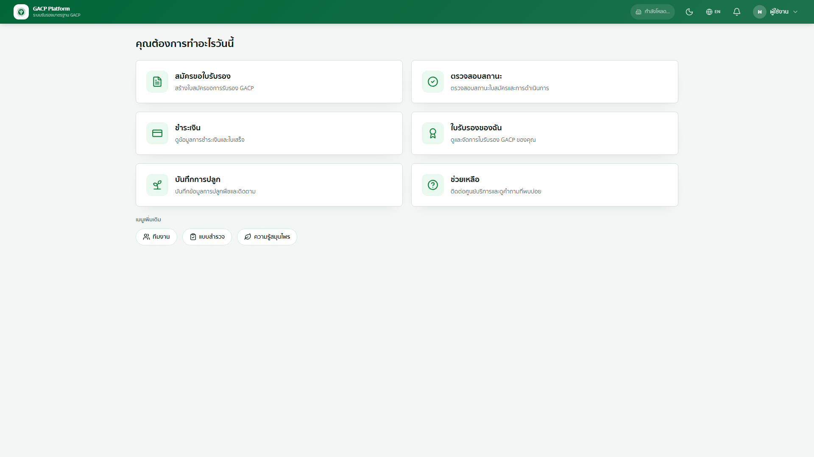
01 — หน้าหลัก (6 tile + เมนูเพิ่มเติม) 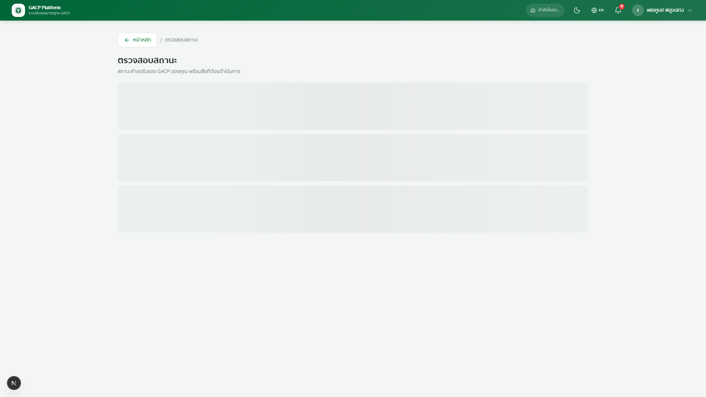
02 — /health/status 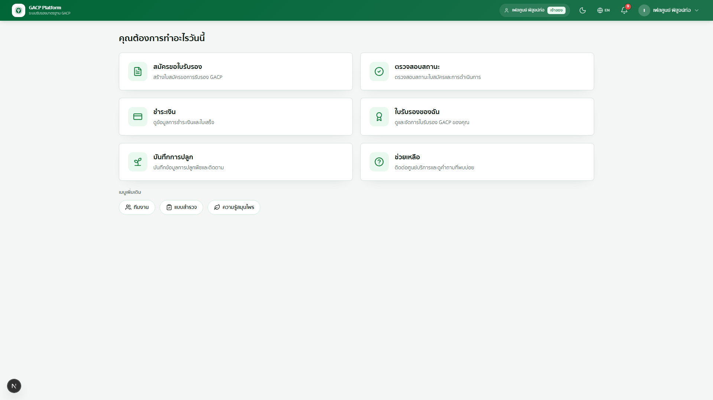
03 — กลับหน้าหลักผ่าน crumb 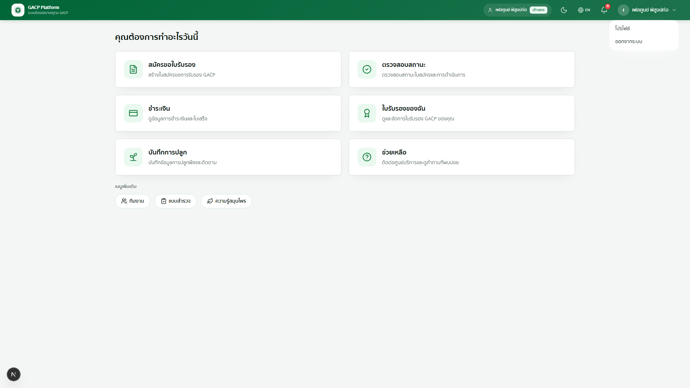
04 — avatar menu: โปรไฟล์ + ออกจากระบบ เท่านั้น
2. Farmer — mobile 390×844 walk1, primary viewport
หน้าหลักมือถือ → bottom nav มีตรง 5 รายการ ไม่มีปุ่ม "ออก" ตัวที่ 6 (RULING 1) → เข้า "ใบรับรอง" ผ่าน bottom nav → กลับหน้าหลักผ่าน bottom nav
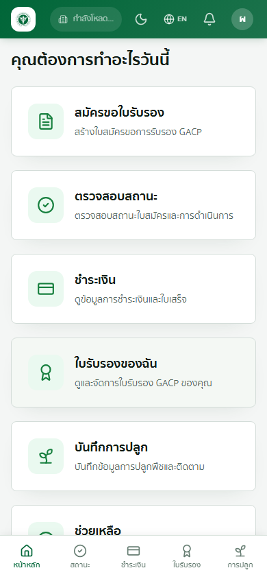
05 — หน้าหลัก มือถือ 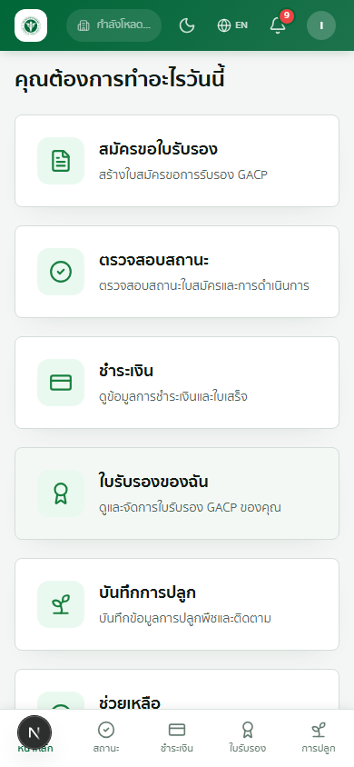
06 — bottom nav ระยะใกล้: 5 รายการพอดี ไม่มี "ออก" 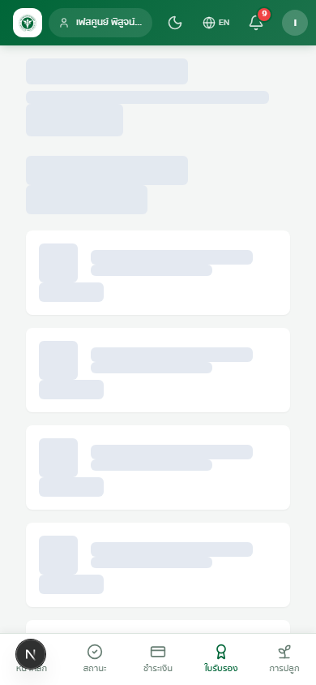
07 — /health/certificates จาก bottom nav 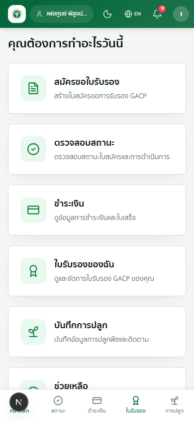
08 — กลับหน้าหลักผ่าน bottom nav
3. Farmer — no active cert farmerA, มือถือ
เกษตรกรที่ยังไม่มีใบรับรองใช้งานอยู่ก็เห็นหน้าหลักได้ปกติ (สถานะ lock ของ "การปลูก" ถูกทดสอบแยกใน bottom-nav.test.tsx เพราะขึ้นกับ timing ของการโหลด cert)
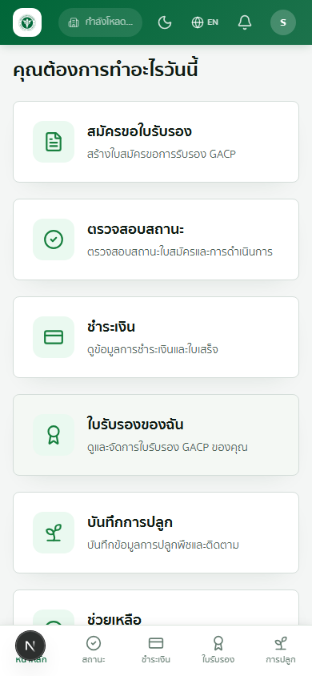
09 — หน้าหลัก farmerA มือถือ
4. Auditor งานตรวจแปลง
เมนูเหลือแค่ tile จริง 1 อัน (สอง tile เดิมชี้ path ที่ไม่มีจริงถูกตัดออกในสเต็ป 1/2) → กดเข้าแล้วเจอหน้าจริง ไม่ใช่ 404
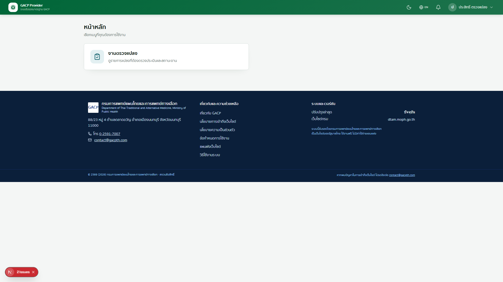
10 — หน้าหลักผู้ตรวจ: tile เดียว 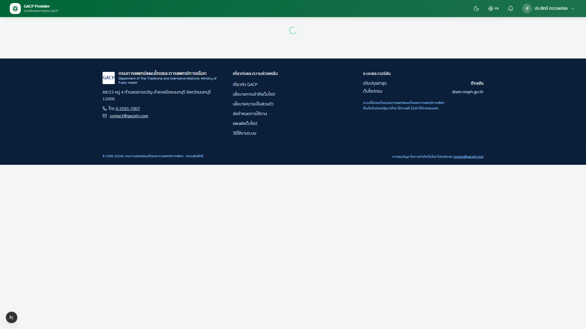
11 — /provider/audits (หน้าจริง)
5. Document reviewer ตรวจเอกสาร
Tile ชี้ path จริง /provider/reviewer (เดิมชี้ /provider/review ที่ไม่มีจริง)
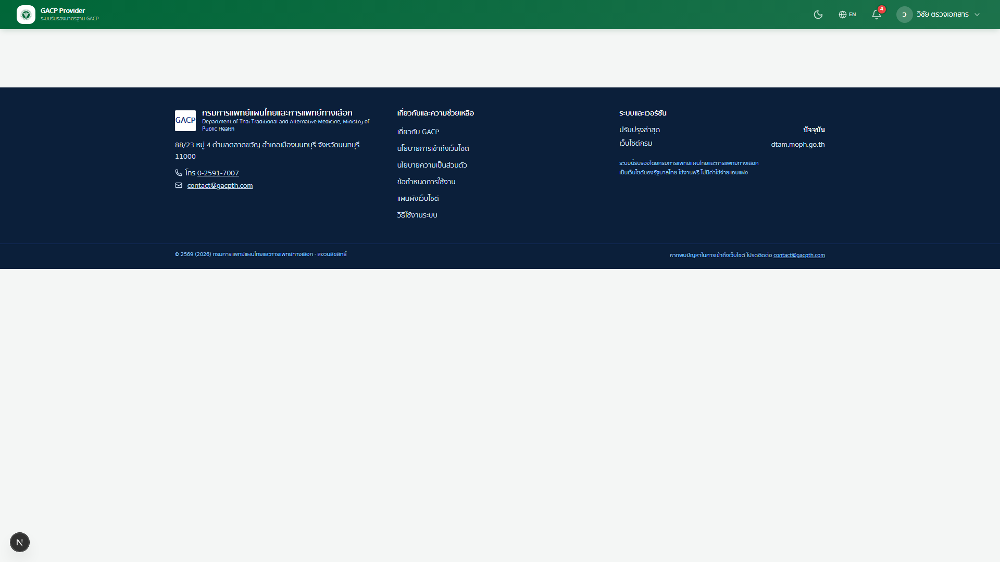
12 — หน้าหลักผู้ตรวจเอกสาร 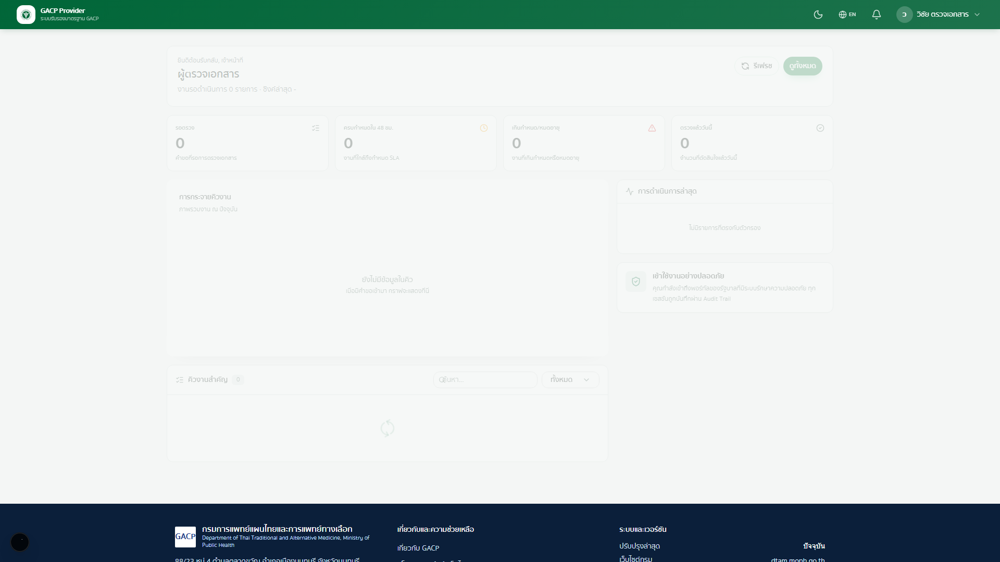
13 — /provider/reviewer (หน้าจริง)
6. Scheduler จัดคิวแบ่งงาน
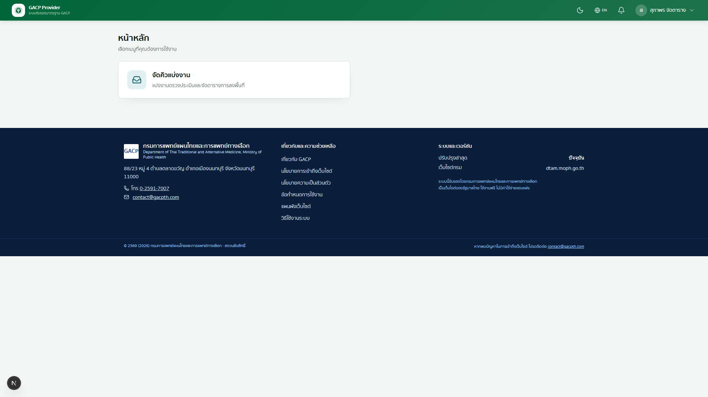
14 — หน้าหลักผู้จัดคิว 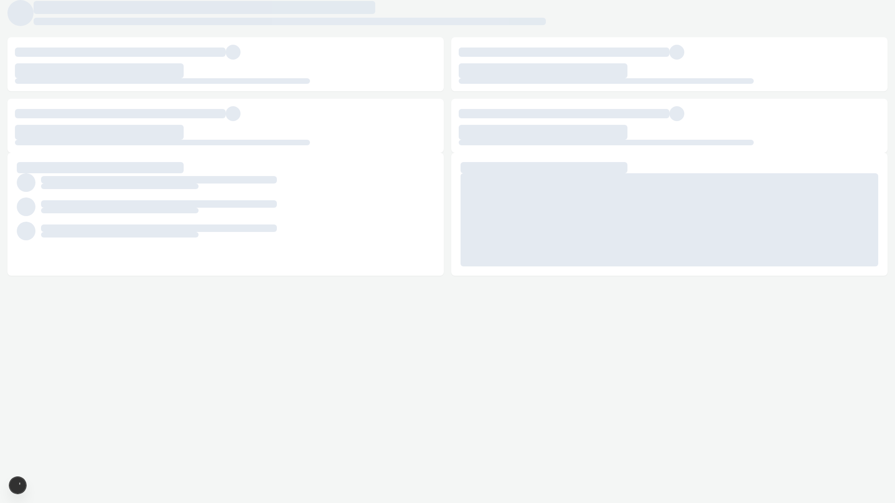
15 — /provider/scheduler/queue
7. Account ธุรกรรมการเงิน
Tile ชี้ /provider/accounting จริง (เดิมชี้ /provider/transactions ที่ไม่มีจริง) → sub-nav tab ไม่มี "สลิป & ใบเสร็จ" อีกต่อไป (RULING 3 / N12) — หน้าเดิมยังเข้าถึงได้ตรง URL
16 — หน้าหลักฝ่ายบัญชี 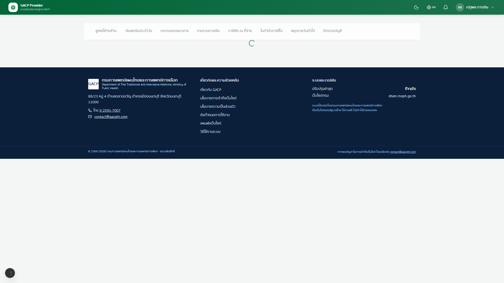
17 — /provider/accounting: ไม่มี tab ตรวจสลิป
8. Admin RULING 2
เข้า /provider/dashboard (จุดเข้าเดิม) แล้ว redirect อัตโนมัติไป /provider/home (providerLandingPath ใหม่) → tile "รายงาน" ชี้ /admin/dashboard จริง (เดิมชี้ /admin/reports ที่ไม่มีจริง)
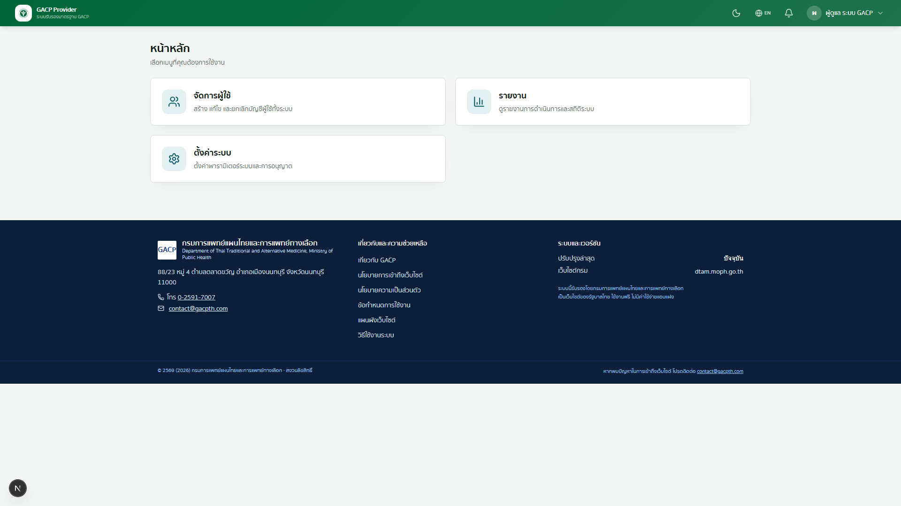
18 — /provider/dashboard → redirect → /provider/home 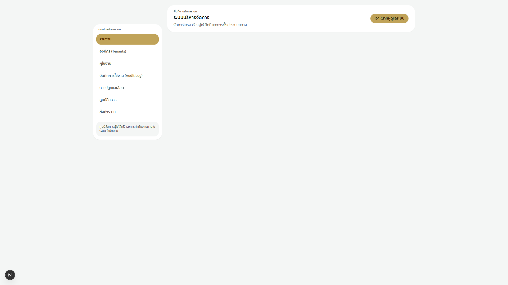
19 — /admin/dashboard (หน้าจริง)
ไม่ครอบคลุม: platform_admin (ไม่มี credential ในชุด UAT seed ที่ใช้เดินรอบนี้) — landing/nav ของ role นี้ไม่ถูกแตะในงานนี้ และถูกคุมด้วย unit test (nav-config.test.ts, landing-route-coherence.test.ts) แทน